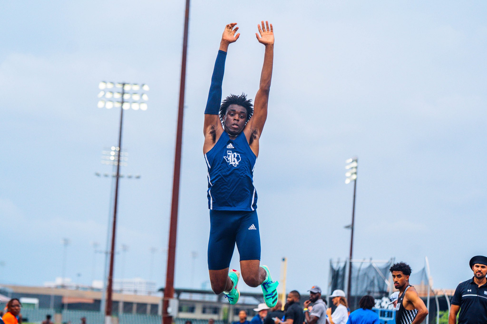
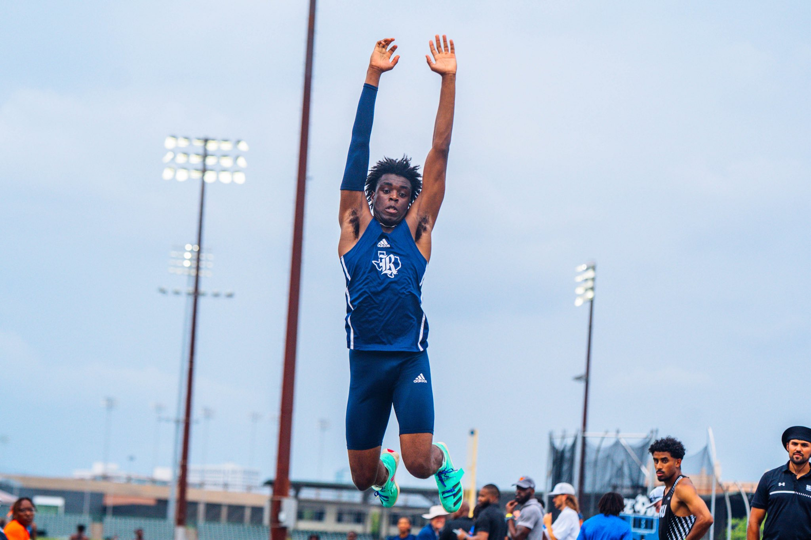

Ellis Ibizugbe | Portfolio
Ellis Ibizugbe | Portfolio
Ellis Ibizugbe | Portfolio
Ellis Ibizugbe | Portfolio
I am a junior at Rice University majoring in Finance and Sport Management. As a Division I Track & Field Student-Athlete specializing in hurdles, triple jump, and long jump, sports have always been a major part of my life. I have also developed a strong passion for business and strategy, leading me to various experiences in finance and sports operations. I’m excited to continue growing and making an impact in these fields.
Rice University
Bachelor of Arts (B.A.) - Finance & Sport Management (Expected May 2026)
Financial Modeling (Excel), Bloomberg, FactSet, SQL, Python, Event Operations, Strategic Planning
Rice Champions Book - Volume 2
Working on the second volume of the Rice Student-Athlete Champions Book, compiling achievements and history since 2006.
As a member of Rice University's Division I Track & Field team, I specialize in hurdles, triple jump, and long jump. Competing at a high level has taught me discipline, resilience, and the importance of teamwork.
 
